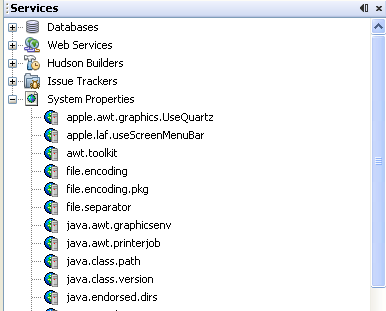

Apache NetBeans
Apache NetBeansLatest release
NetBeans System Properties Module Tutorial
| This tutorial needs a review. You can edit it in GitHub following these contribution guidelines. |
This tutorial is intended to demonstrate aspects of the NetBeans Nodes API.
For troubleshooting purposes, you are welcome to download the completed tutorial source code.
Setting Up the Module Project
Before you start writing the module, set up its structure and dependencies correctly. NetBeans IDE provides a wizard and dialogs that set up all the basic files and configurations needed for a module.
Creating the Module Project
In this section, we use the New Module wizard to create the source structure needed by all module projects.
-
Choose File > New Project (Ctrl+Shift+N). Under Categories, select NetBeans Modules. Under Projects, select Module. Click Next.
-
In the Name and Location panel, type
SystemPropertiesin the Project Name field. Change the Project Location to any directory on your computer. Click Next.
-
In the Basic Module Configuration panel, type
org.myorg.systempropertiesin Code Name Base. Click Finish.
The IDE creates the System Properties project. The project contains all of your sources and project metadata, such as the project’s Ant build script. The project opens in the IDE. You can view its logical structure in the Projects window (Ctrl-1) and its file structure in the Files window (Ctrl-2).
Specifying the Module’s Dependencies
Later, you will need to subclass several classes that belong to NetBeans APIs. Each NetBeans API, provided by a module, has to be declared as a module dependency. Use the Project Properties dialog box for this purpose, as explained below.
-
In the Projects window, right-click the
System Propertiesproject and choose Properties. In the Project Properties dialog box, click Libraries and then click Add… Start typing 'CallableSystemAction', which is one of the NetBeans API classes you will need later. As you type, notice that the filter narrows, displaying only those modules that can provide the class that you are typing.
-
For each of the following APIs, click "Add…" in the Libraries panel, select the name from the Module list, and then click OK to confirm it:
-
Core IDE(click "Show Non-API Modules" to see it)
Click OK to exit the Project Properties dialog box.
-
In the Projects window, expand the Important Files node and double-click "Project Metadata". The
project.xmlfile opens. Note that the modules you selected have been declared as dependencies.
Creating the Main Files
The functionality of a NetBeans module is provided by its Java classes. In this section, you will create and examine each of them:
-
AllPropsNode.java -
PropertiesNotifier.java -
AllPropsChildFactory.java -
OnePropNode.java -
RefreshPropsAction.java
AllPropsNode.java
This Java class specifies the definition of the main node. The definition includes a display name, as well as a definition of the children that will be under the main node. The definition of the children is provided by the AllPropsChildFactory class, which keeps track of the list of child nodes. The class also takes care of things such as the main node’s context menu.
Via the @ServicesTabNodeRegistration annotation, the node is registered as a new node within the Services window.
Do the following:
-
Create the file. Right-click the
org.myorg.systempropertiesnode and choose New > Other. Under Categories, choose Java Classes. Under File Types, choose Java Class. Click Next and typeAllPropsNodein Class Name. Click Finish. The new Java class opens in the Source Editor. Replace the default code with the following:
import java.io.IOException;
import javax.swing.Action;
import org.netbeans.api.core.ide.ServicesTabNodeRegistration;
import org.openide.DialogDisplayer;
import org.openide.NotifyDescriptor;
import org.openide.actions.NewAction;
import org.openide.actions.OpenLocalExplorerAction;
import org.openide.actions.PropertiesAction;
import org.openide.actions.ToolsAction;
import org.openide.nodes.AbstractNode;
import org.openide.nodes.Children;
import org.openide.nodes.Node;
import org.openide.util.HelpCtx;
import org.openide.util.NbBundle.Messages;
import org.openide.util.actions.SystemAction;
import org.openide.util.datatransfer.NewType;
@ServicesTabNodeRegistration(name = "AllPropsNode",
displayName = "#LBL_AllPropsNode",
shortDescription = "#HINT_AllPropsNode",
iconResource = "org/myorg/systemproperties/allPropsIcon.gif",
position = 2021)
@Messages({
"LBL_AllPropsNode=System Properties",
"HINT_AllPropsNode=Shows all currently set system properties."
})
public class AllPropsNode extends AbstractNode {
public AllPropsNode() {
super(Children.create(new AllPropsChildFactory(), false));
setDisplayName(Bundle.LBL_AllPropsNode());
setShortDescription(Bundle.HINT_AllPropsNode());
setIconBaseWithExtension("org/myorg/systemproperties/allPropsIcon.gif");
}
@Override
public Action[] getActions(boolean context) {
Action[] result = new Action[]{
new RefreshPropsAction(),
null,
SystemAction.get(OpenLocalExplorerAction.class),
null,
SystemAction.get(NewAction.class),
null,
SystemAction.get(ToolsAction.class),
SystemAction.get(PropertiesAction.class),};
return result;
}
@Override
public HelpCtx getHelpCtx() {
return HelpCtx.DEFAULT_HELP;
}
@Override
public Node cloneNode() {
return new AllPropsNode();
}
@Messages({
"LBL_NewProp=System Property",
"LBL_NewProp_dialog=Create New Property",
"MSG_NewProp_dialog_key=New property name:",
"MSG_NewProp_dialog_value=New property value:"})
@Override
public NewType[] getNewTypes() {
return new NewType[]{
new NewType() {
@Override
public String getName() {
return Bundle.LBL_NewProp();
}
@Override
public void create() throws IOException {
NotifyDescriptor.InputLine msg = new NotifyDescriptor.InputLine(Bundle.LBL_NewProp_dialog(), Bundle.MSG_NewProp_dialog_key());
DialogDisplayer.getDefault().notify(msg);
String key = msg.getInputText();
if ("".equals(key)) {
return;
}
msg = new NotifyDescriptor.InputLine(Bundle.MSG_NewProp_dialog_value(), Bundle.MSG_NewProp_dialog_key());
DialogDisplayer.getDefault().notify(msg);
String value = msg.getInputText();
System.setProperty(key, value);
PropertiesNotifier.changed();
}
}
};
}
}-
Understand the file. Here is an explanation of the class:
-
*
public class AllPropsNode extends AbstractNode.*AbstractNodeis a generic Node subclass.Nodeis the abstract class,AbstractNodeis the common implementation that can be customized. -
Constructor:
-
*
public AllPropsNode.* In creating this node, it first calls super — the constructor for the super class (AbstractNode). This creates the infrastructure for AbstractNode, and shows that it is mandatory to supply a child object for its use. This object represents the list of children of the node, creating a separate class for clarity: AllPropsChildFactory. -
*
setIconBaseWithExtension.* Designates the location for the associated icon. -
*
setDisplayName.* Sets the name the user sees. This defaults to the internal name, but it is better to set it to something localized. -
*
setShortDescription.* Sets the associated tool tip. This is the override to specify what goes into the node context menu. -
Methods:
-
*
getActions.* The following is a list of actions to be displayed in the menu, with separators between the menu items. The following methods are used: -
RefreshPropsActionis an action defined in another source file -
NewActionenables the creation of a new subnode or key-value pair -
OpenLocalExplorerActionpermits the user to make a new Explorer window showing only system properties
-
Both ToolsAction and PropertiesAction are standard actions that most nodes should have.
-
*
getHelpCtx.* Supplies an IDE key for the context help. When building context help for this Module, this is how you would associate a specific node with a specific help string. -
*
cloneNode.* Creates a new copy of the node that enables other parts of the IDE to display a separate copy of the System Properties list, other than the Services window. This is more efficient than the fallback implementation, which is to delegate to the original. -
*
getNewTypes.* Returns a list ofNewTypeobjects. When there is aNewActionin the context menu, the action displays menu items corresponding to each of theNewTypesin the node. The action provides the actual GUI, such as showing a submenu. You specify abstract definitions and make the new objects. In this example, only oneNewTypeis returned, since there is only one type of thing that can reasonably be created (a new system property); however, more than oneNewTypecould be returned, and they would be displayed in a submenu. -
*
create.* Creates the new object. In this example, there will be dialog boxes for the key-in values. -
*
NotifyDescriptor.InputLine.* The description of a small dialog with a single text entry field pop up, a title for the dialog, and a message. -
*
DialogDisplayer.getDefault().notify(desc).* Displays all this in a pop-up dialog. -
*
getInputText.* Retrieves the user input for the key.
The same is done for the value, again using DialogDisplayer.getDefault and getInputText .
Next, System.setProperty , from the Java API, is called to set the system property.
Finally, another class, PropertiesNotifier.changed (created next), is called to indicate to other classes and Module components that something about the current set of system properties has changed and updates are required. For example, there may be a new property, or an existing value may have changed.
PropertiesNotifier.java
This Java class manages routing events whenever there are changes, including adding, deleting, or renaming a property, or when a property value has changed. You could also see it as a helper routine, very similar to a JavaBeans component that has an event set attached to it. However, it is not strictly a JavaBeans component — there are no instances of this class — but its static methods are used like JavaBeans instance methods. Use is made of the ChangeSupport class from the NetBeans APIs, which is an equivalent of PropertyChangeSupport for ChangeListeners .
-
Create the file. Right-click the
org.myorg.systempropertiesnode, choose New > Java Class, and typePropertiesNotifierin Class Name. Click Finish. The new Java class opens in the Source Editor. Replace the default code with the following:
import javax.swing.event.ChangeListener;
import org.openide.util.ChangeSupport;
public class PropertiesNotifier {
private static final ChangeSupport cs = new ChangeSupport(PropertiesNotifier.class);
public static void addChangeListener(ChangeListener listener) {
cs.addChangeListener(listener);
}
public static void removeChangeListener(ChangeListener listener) {
cs.removeChangeListener(listener);
}
public static void changed() {
cs.fireChange();
}
}-
Understand the file. The methods defined for this class are as follows:
-
*
changed.* Fires an event to those processes that are listening. Every component that displays information based on a system property must listen for these events and update their displays as needed. -
*
addChangeListener* and *removeChangeListener.* Lets components register themselves as listeners for these events. Processes which have displayed state can add aChangeListenerto this class. To ensure proper updates, processes that affect the state callchanged.
-
AllPropsChildFactory.java
This Java class is responsible for keeping track of the list of nodes underneath the main node. When first asked for the list, the class retrieves all system properties and asks the node implementation to keep track of all the system property names. The abstract class doing this is called Children .
In this example, a popular children implementation called ChildFactory is used. By subclassing ChildFactory , you need not explicitly keep track of the nodes — this implementation does that. Instead, you keep track of a set of keys, which are lighter weight objects. Each key typically represents one node. You must tell the implementation how to create a node for each key. You can decide for yourself what type of keys to use.
In this example, the keys are names of system properties.
-
Create the file. Right-click the
org.myorg.systempropertiesnode, choose New > Java Class, and typeAllPropsChildFactoryin Class Name. Click Finish. The new Java class opens in the Source Editor. Replace the default code with the following code:
import java.util.ArrayList;
import java.util.Collections;
import java.util.List;
import javax.swing.event.ChangeEvent;
import javax.swing.event.ChangeListener;
import org.openide.nodes.ChildFactory;
import org.openide.nodes.Node;
public class AllPropsChildFactory extends ChildFactory.Detachable<String> {
private ChangeListener listener;
@Override
protected void addNotify() {
PropertiesNotifier.addChangeListener(listener = new ChangeListener() {
@Override
public void stateChanged(ChangeEvent ev) {
refresh(true);
}
});
}
@Override
protected void removeNotify() {
if (listener != null) {
PropertiesNotifier.removeChangeListener(listener);
listener = null;
}
}
@Override
protected Node createNodeForKey(String key) {
return new OnePropNode(key);
}
@Override
protected boolean createKeys(List<String> toPopulate) {
List<String> keys = new ArrayList<String>();
for (Object prop : System.getProperties().keySet()) {
keys.add((String) prop);
}
Collections.sort(keys);
toPopulate.addAll(keys);
return true;
}
}-
Understand the file. The important methods that should be defined when implementing
ChildFactoryinclude:-
*
addNotify.* Called the first time that a list of nodes is needed by the platform. An example of this is when the System Properties node is expanded. WhenaddNotifyis called, it calls the helper methodrefreshListto determine the keys, then it registers itself with thePropertiesNotifier, requesting notification of any system property changes. If there is such a change, the list will be refreshed. -
*
removeNotify.* Called when the user collapses a System Properties node and starts working on something else. The platform will notice that the list of nodes is no longer needed, and it will free up the memory that is no longer being used. Note that momentarily collapsing the node will not trigger this call. WhenremoveNotifyis called, it removes the listener, as it is no longer interested in receiving notifications. In addition,refreshis called. This method is defined byChildFactoryfor use by the subclasses. -
*
createKeys.* TheSystem.getPropertiescall retrieves all of the properties currently defined in the system. This call goes through all of the property names, keeping and sorting this list. Whentrueis returned, every item found in thetoPopulatelist is automatically passed tocreateNodeForKey, where the subnodes are created, one per system property, sorted by property name. -
*
createNodeForKey.* Called by the implementation whenever it needs to construct a child node. It is passed the key for which it is making a node. It returns either none, one, or more nodes corresponding to what should be displayed for the key. In this example, a new instance of one property node is being created, and the system property name is passed into its constructor.
-
OnePropNode.java
This Java class provides the AbstractNode implementation for a single property. Its constructor requires a string key. This class displays a single system property name. When the user expands the system properties node, it builds a list of keys, then creates a corresponding number of OnePropNodes . Each OnePropNode displays a single key, and does not directly interact with its parent node — its knowledge is limited to a single system property and how to deal with it, as well as notifying the PropertiesNotifier if there are any changes. This design makes it easier to reuse such nodes, including placing them in other contexts.
-
Create the file. Right-click the
org.myorg.systempropertiesnode, choose New > Java Class, and typeOnePropNodein Class Name. Click Finish. The new Java class opens in the Source Editor. Replace the default code with the following:
import java.io.IOException;
import java.util.Properties;
import javax.swing.Action;
import javax.swing.event.ChangeEvent;
import javax.swing.event.ChangeListener;
import org.openide.actions.DeleteAction;
import org.openide.actions.PropertiesAction;
import org.openide.actions.RenameAction;
import org.openide.actions.ToolsAction;
import org.openide.nodes.AbstractNode;
import org.openide.nodes.Children;
import org.openide.nodes.Node;
import org.openide.nodes.PropertySupport;
import org.openide.nodes.Sheet;
import org.openide.util.NbBundle.Messages;
import org.openide.util.actions.SystemAction;
public class OnePropNode extends AbstractNode {
private String key;
private ChangeListener listener;
@Messages("HINT_OnePropNode=Represents one system property.")
public OnePropNode(String key) {
super(Children.LEAF);
this.key = key;
setIconBaseWithExtension("org/myorg/systemproperties/onePropIcon.gif");
super.setName(key);
setShortDescription(Bundle.HINT_OnePropNode());
}
@Override
public Action[] getActions(boolean context) {
Action[] result = new Action[]{
SystemAction.get(DeleteAction.class),
SystemAction.get(RenameAction.class),
null,
SystemAction.get(ToolsAction.class),
SystemAction.get(PropertiesAction.class),};
return result;
}
@Override
public Action getPreferredAction() {
return SystemAction.get(PropertiesAction.class);
}
@Override
public Node cloneNode() {
return new OnePropNode(key);
}
@Messages({"PROP_value=Value","HINT_value=Value of this system property."})
@Override
protected Sheet createSheet() {
Sheet sheet = super.createSheet();
Sheet.Set props = sheet.get(Sheet.PROPERTIES);
if (props == null) {
props = Sheet.createPropertiesSet();
sheet.put(props);
}
props.put(new PropertySupport.Name(this));
class ValueProp extends PropertySupport.ReadWrite {
public ValueProp() {
super("value", String.class, Bundle.PROP_value(), Bundle.HINT_value());
}
@Override
public Object getValue() {
return System.getProperty(key);
}
@Override
public void setValue(Object nue) {
System.setProperty(key, (String) nue);
PropertiesNotifier.changed();
}
}
props.put(new ValueProp());
PropertiesNotifier.addChangeListener(listener = new ChangeListener() {
@Override
public void stateChanged(ChangeEvent ev) {
firePropertyChange("value", null, null);
}
});
return sheet;
}
@Override
protected void finalize() throws Throwable {
super.finalize();
if (listener != null) {
PropertiesNotifier.removeChangeListener(listener);
}
}
@Override
public boolean canRename() {
return true;
}
@Override
public void setName(String nue) {
Properties p = System.getProperties();
String value = p.getProperty(key);
p.remove(key);
if (value != null) {
p.setProperty(nue, value);
}
System.setProperties(p);
PropertiesNotifier.changed();
}
@Override
public boolean canDestroy() {
return true;
}
@Override
public void destroy() throws IOException {
Properties p = System.getProperties();
p.remove(key);
System.setProperties(p);
PropertiesNotifier.changed();
}
}-
Understand the file. Here is an explanation of the class:
-
*
public class OnePropNode extends AbstractNode.*AbstractNodeis a generic Node subclass.Nodeis the abstract class,AbstractNodeis the common implementation that can be customized.
-
Constructor:
-
*
super( Children.LEAF).* Tells the node�s hierarchy that this is a leaf node that will not need to be expanded and will not have any children. It then stores the key and sets the icon. -
*
super. setName(key).* Sets the name of the key. The inherited version is used, to set the node name (it does not attempt to rename the actual property). -
*
setShortDescription.* Sets the associated tool tip. This is the override to specify what goes into the node context menu.
-
-
Methods:
-
*
getPreferredAction.* Sets what is run by default if the node is double clicked or similar user actions are performed. In this example, the default action is to pop up the property sheet. -
*
createSheet.* Configures the look of the property sheet. This creates the list of tabs in the property sheet, along with the list of properties.createSheetis not called until there is a need to display the list of properties. -
*
super. createSheet.* Ensures there is a sheet to start with. -
*
sheet.get (Sheet.PROPERTIES).* Checks to see if there is a tab namedProperties. If not,Sheet.createPropertiesSetmakes one. Note thatSheetrefers to the entire set of properties for the node, andSheet.Setis one tab in the property sheet. -
*
PropertySupport.Name.* Creates aNameproperty that reflects the name of the node. The code is already synchronizing the node name with the system property name. -
*
ValueProp.* Is an inner class, a custom property that is created for this example.PropertySupport.ReadWriteis the base class for entering and viewing values. The super call provides a code name for the property as well as a display name and a tool tip for the user. -
*
getValue.* Looks up the system property. -
*
setValue.* Sets a new value for the system property and notifies other processes that the value has changed.
-
The property is added to the property sheet, along with a ChangeListener , which listens for changes in system properties, which may mean that this specific property has changed. If true, then the firePropertyChange node fires a change to say that one of the properties in its property sheet is no longer valid, and checks and updates should be made accordingly. Note that the name of the property is value, which matches the internal name assigned when creating ValueProp .
-
*
finalize.* Called when the class is destroyed — whenever this node is destroyed, theChangeListeneris removed. -
*
canRename.* Returnstrue, allowing the node to be renamed. -
*
setName.* Called when the node is renamed, such as from the rename action, an inplace rename from the Explorer, or from the Name property in the property sheet. This action retrieves all system properties and associated values, removes the key, adds a new property with a new name and value, and sets the system properties. This action also notifies all concerned that it has changed, though it does not directly rename itself (seeAllPropsChildFactorynext). -
*
canDestroy.* Gives permission to delete this node. -
*
destroy.* Retrieves system properties, removes its key, sets properties back, and notifies all concerned of changes. Note that thisdestroymethod does not remove the node — it only removes the system property and notifies interested parties that this property is gone. The node is actually removed later, byAllPropsChildFactory.AllPropsChildFactoryrealizes this property no longer exists, and creates a new set of keys that no longer includes this property. Then theChildFactoryimplementation automatically removes that node. This is done to reflect the actual state of the system.
RefreshPropsAction.java
This Java class provides the "Refresh" action that appears in the pop-up menu under the "System Properties" main node. It forces a refresh to occur, updating the display of information based on the current state of system properties. It is a plain AbstractAction and is always enabled, yet is not sensitive to what is selected. In principle, it could also be placed as a button in a toolbar.
-
Create the file. Right-click the
org.myorg.systempropertiesnode, choose New > Java Class, and typeRefreshPropsActionin Class Name. Click Finish. The new Java class opens in the Source Editor. Replace the default code with the following:
import org.openide.util.NbBundle.Messages;
import java.awt.event.ActionEvent;
import javax.swing.AbstractAction;
public class RefreshPropsAction extends AbstractAction {
@Messages("LBL_RefreshProps=Refresh")
public RefreshPropsAction() {
super(Bundle.LBL_RefreshProps());
}
@Override
public void actionPerformed(ActionEvent e) {
PropertiesNotifier.changed();
}
}-
Understand the file. When the action is invoked, the standard JDK
actionPerformedmethod is called:-
*
actionPerformed.* CallsPropertiesNotifier.changedto indicate to other classes and Module components that something about the current set of system properties has changed and updates are required. For example, a new property may have been added or an existing value may have been changed.
-
Setting Up the Supporting Files
Once you have coded the main files, you must include the icons you’d like to use. For the icons used to display the nodes, you can use any 16x16 pixel icons you want, so long as they are named allPropsIcon.gif and onePropIcon.gif , which is what they are named in the code above.
Alternatively, use the icons below:
Note that the setIconBaseWithExtension statements in the constructors of AllPropsNode.java and OnePropNode.java set the location of the icons.
Building and Installing the Module
Now that you have completed your module, it is time to try it out. The IDE uses an Ant build script to build and install your module. The build script was created for you when you created the module project.
-
In the Projects window, right-click the
System Propertiesproject and choose Install/Reload in Target Platform.
The module is built and installed in the target IDE or Platform. The target IDE or Platform opens so that you can try out your new Module. The default target IDE or Platform is the installation used by the current instance of the development IDE. Note that when you run your Module, you will be using a temporary test user directory, not the development IDE’s user directory.
-
In the IDE’s Services window (Ctrl-5), you should see the new node, together with its many subnodes:

Next Steps
For more information about creating and developing NetBeans Module, see the following resources: